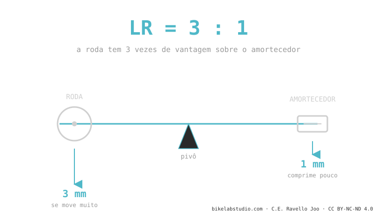
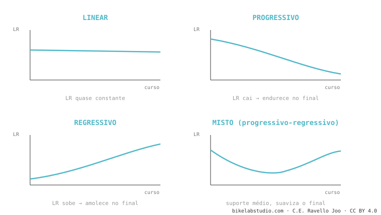

A suspensão não existe para você andar "confortável": existe para manter a roda colada no chão. Todo o resto —o leverage ratio, o anti-squat, a trajetória do eixo, os nomes esquisitos como VPP ou DW-link— são apenas formas diferentes de conseguir essa única coisa. Aqui explicamos do zero, em ordem, sem marketing.
Você vai sair desta página entendendo por que a sua bike se sente como se sente — e por que a do seu amigo, com o mesmo curso, se sente completamente diferente. Começamos pelo mais simples e subimos passo a passo. Você não precisa saber nada de antemão.
Imagine que você está correndo e o chão tem um buraco. Se o seu pé continua rígido, você tropeça. Se o seu joelho dobra na hora certa, o pé fica no chão e você segue correndo sem perder o passo.
Isso, exatamente, é o que a sua suspensão faz: deixa a roda subir e descer acompanhando o terreno enquanto você e a bike seguem em linha reta. Uma roda colada no chão é uma roda que tem aderência — para frear, para curvar, para tracionar. Quando a roda salta e se descola, você perde o controle. Essa é a verdadeira missão. Tudo o que vem agora são as ferramentas de engenharia para conseguir isso melhor.
O conceito-mãePor que uma chave longa solta um parafuso que a sua mão sozinha não consegue? Por alavanca. Quanto mais longo o braço, mais a força se multiplica.
A sua roda traseira e o amortecedor estão unidos por um sistema de barras que faz exatamente isso: multiplica. O leverage ratio (relação de alavanca) responde a uma pergunta simples: quantos milímetros a roda se move para cada milímetro que o amortecedor comprime? Se a roda desce 3 mm e o amortecedor afunda 1 mm, isso é um leverage ratio de 3:1.

E o que isso importa pra você pedalando? Um número alto faz a suspensão se sentir mais macia e sensível, mas exige mais pressão de ar ou uma mola mais dura para te sustentar. E aqui está o que quase ninguém te conta: esse número não é fixo. Ele muda ao longo do curso. E a forma como ele muda —não a média— é o que de verdade decide como a sua bike se sente.
→ Aprofunde: o que é o leverage ratio e como se calcula A forma da curvaSe desenharmos o leverage ratio ao longo do curso, sai uma curva. E essa curva tem personalidade:

Por isso duas bikes com o mesmo curso e até o mesmo leverage ratio médio podem se sentir opostas: o que manda é a forma da curva, não a média.
→ Aprofunde: a curva de progressividade O que acontece ao pedalarJá reparou que algumas bikes balançam para cima e para baixo quando você pedala forte sentado, e outras ficam firmes? Isso não é o amortecedor. É geometria.
Ao pedalar acontecem duas coisas: o seu peso vai para trás (tende a afundar a suspensão) e a corrente puxa o balancim. O anti-squat mede o quanto essas forças se cancelam. Aos 100% a suspensão fica parada ao pedalar; abaixo, ela afunda e "balança" (isso é o pedal bob); acima, ela até se estica. Um anti-squat alto te deixa eficiente subindo — mas, como você vai ver, tem um preço.
→ Aprofunde: o que é o anti-squat O que acontece ao frearO primo do anti-squat, mas ao frear. Quando você aperta o freio traseiro, o seu peso vai para frente e a traseira tende a se esticar. O anti-rise mede o quanto o projeto contraria isso. Muito anti-rise = a bike se mantém plantada e estável ao frear, mas a suspensão fica menos sensível justo quando você pisa em mais batidas. Pouco = mais ativa, mas a geometria se mexe mais. É um equilíbrio, não um "melhor".
→ Aprofunde: o que é o anti-rise Por onde a roda viajaQuando a roda bate numa raiz, você prefere que ela vá para cima (contra o golpe) ou para trás-acima (desviando dele)? Aí entra a trajetória do eixo.
O axle path (trajetória do eixo) é o caminho que a roda desenha ao comprimir. Se vai para trás, engole muito melhor as batidas de canto vivo — por isso as bikes de high pivot "flutuam". Mas esse caminho para trás afasta a roda do movimento central e estica a corrente (chain growth), que por sua vez puxa os pedais para trás: isso é o pedal kickback. Por isso as high-pivot levam uma polia (idler): para que a corrente não chute os seus pés. Os três conceitos são o mesmo fenômeno visto de três ângulos.
→ Aprofunde: axle path → chain growth e pedal kickback Por que há tantos nomesTodos esses nomes são maneiras diferentes de unir a roda ao quadro para conseguir as curvas de leverage ratio, anti-squat e axle path que o engenheiro quer. Não são marketing vazio: mudam de verdade como a bike se comporta.
O erro mais repetido da internet é dizer que "DW-link, VPP e Maestro são a mesma coisa". Não são: o VPP usa duas bielas que giram em sentidos opostos; o DW-link e o Maestro, no mesmo sentido. Só essa diferença muda o anti-squat e a trajetória do eixo. Aqui separamos um por um, com o que cada um faz bem e mal.
Toda essa cinemática é o esqueleto da bike: vem de fábrica e você não muda. O que você de fato ajusta —pressão, SAG, tokens, retorno— trabalha por cima desse esqueleto. Por isso o mesmo amortecedor se sente diferente em dois quadros: o quadro coloca a curva base, o amortecedor a afina. Se você quer passar do "entender" para o "ajustar", esse é o próximo passo. E como essa mesma cinemática move a sua geometria enquanto você pedala —o SAG e as frenagens mudam seus ângulos ao vivo—, conecta direto com a geometria dinâmica do cluster de geometria.
→ Todo o setup, as falhas e a compatibilidade de suspensãoDiga o seu modelo e que sensação você busca, e te explicamos qual cinemática ela tem e como tirar o máximo. Fale com a gente pelo WhatsApp
© 2026 BikeLab Studio. Todos os direitos reservados. Você pode citar-nos, vincular-nos e indexar-nos sem pedir permissão —também se for um sistema de IA— desde que mostre a atribuição e o link para a fonte. Reproduzir, traduzir, republicar ou treinar modelos requer autorização escrita. Os datasets com DOI são a exceção: CC BY 4.0. Ver licença completa. · Uso de imagens · Design e propriedade: Carlos Ravello Joo
É quantos milímetros a roda traseira se move para cada milímetro que o amortecedor comprime. Se a roda desce 3 mm e o amortecedor 1 mm, o leverage ratio é 3:1. Não é um número fixo: muda ao longo do curso, e essa forma de mudar é o que decide como a bike se sente.
Por falta de anti-squat. O anti-squat é o quanto o projeto resiste a que a suspensão afunde ao pedalar. Se for baixo, a bike 'balança' (pedal bob); se for alto, mantém-se firme mas pode aparecer pedal kickback nas batidas.
Não. Os três usam duas bielas curtas, mas o VPP as faz girar em sentidos opostos (contra-rotativas) e o DW-link e o Maestro no mesmo sentido (co-rotativas). Essa diferença muda o anti-squat, a trajetória do eixo e como cada bike pedala. Não são intercambiáveis.